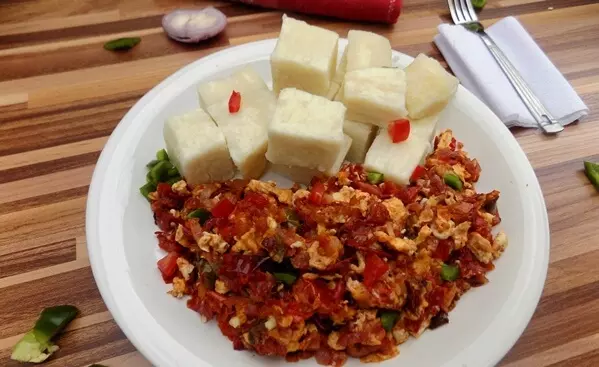

Egg source
This one is going to be easy. If you are new to making Nigerian foods and desires to start with the recipes that are easy, I would suggest you start here. This takes just about six different ingredients and the preparation time is less than 20 minutes.
Ingredients
- 3 eggs
- 2 spoons sliced pepper
- Vegetable oil (200ml).
- 2 cups of sliced fresh tomatoes.
- Sliced pepper to taste.
- 1 cup of sliced onions.
- One cube of maggi or knorr.
- Salt to taste.
Steps
- Start by Slicing your tomatoes, onions, and peppers using a kitchen knife.
- Set frying pan on the heat and add just 200ml of oil (vegetable or olive oil), allow the oil to heat up for few minutes.
- Add the sliced tomatoes, peppers, onions and fry.
- Add salt to taste, half of a seasoning cube. Stir to avoid burning.
- Beat eggs in a separate bowl, add a pinch of salt and pour it into the frying tomatoes.
- Allow the egg to fry.
- Don't let it get burned. Try breaking into tiny crumbs so you can get an exact replica of what you see here.
- Serve egg sauce with boiled white yams.